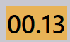
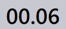
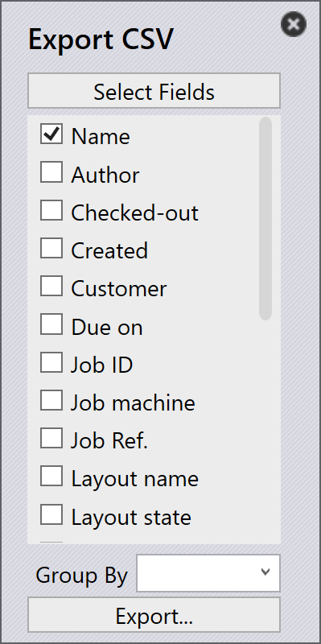

作业视图
本节介绍作业视图中可用的不同视图，包括作业、零件、排样、编辑、模拟和导出。
作业
选择 套料 选项会显示软件中当前设置的所有作业的列表。您可以双击作业以查看其详细信息，或右键单击以访问其他选项。
-
作业以平铺视图显示，每个作业都显示基本属性，如作业 ID、作业参考、客户名称、总零件数、到期日期、作业状态栏等。
-
每个作业平铺还以堆叠卡片格式显示零件图像。您可以使用鼠标滚轮滚动浏览作业中的所有零件。

作业详细信息
-
双击平铺或在选择平铺后按 Enter 键会将视图切换到详细信息模式。
-
详细信息页面显示零件列表以及排样的板材（布局）（如果有）。
-
使用向上/向下箭头键在详细信息页面中的作业之间切换。
-
在零件堆叠上滚动鼠标滚轮会在零件列表和布局中突出显示该零件。
-
选择布局会突出显示该布局以及排样在其上的所有零件。突出显示会在一分钟后自动关闭。

-
排样总结：
-
零件：显示作业中的订单项总数和总数量。
-
板材：显示排样板材的总数以及板材总数量。
-
-
工步：
-
折弯：显示分配的机床及其要处理的订单数量。
-
切割：显示分配的机床及其要处理的订单数量。
-
优先级
-
首先，单击屏幕左侧的 作业 图标，选择要编辑的作业，然后单击屏幕右侧的 编辑（确保选择了作业选项）。
-
或者，右键单击选定的作业，然后单击 签出文件以供编辑 图标。
-
当您单击 编辑 时，将显示编辑作业窗口。在此窗口中，您可以设置或更改作业的优先级。

-
根据作业零件优先级，作业平铺中的作业参考会相应地进行颜色着色。
-
作业零件首先按优先级排序，然后按到期日期排序。它们还会根据其优先级进行颜色着色。
-
排样时，首先考虑 紧急 零件，然后是 高，然后是 正常，最后 低 优先级零件放置在排样板材上的剩余空间中。
-
排样板材也根据优先级进行排序和颜色着色。
| 作业优先级 | 颜色描述 |
|---|---|
 |
紧急 |
 |
正常 |
|
高 |
|
低 |


状态
-
作业状态栏使用颜色代码指示作业的进度或条件，基于已处理或剩余的数量。
-
作业中的零件和排样板材也用匹配的颜色突出显示，以反映其在整个作业中的各自状态。
-
颜色编码改进了跟踪，并确保操作员可以轻松一目了然地查看生产状态。


| 作业状态 | 描述 |
|---|---|
|
未就绪 |
|
排样 |
|
已就绪 |
|
折弯已规划 |
|
缺少板材 |
|
折弯队列 |
|
切割队列 |
|
完成 |


零件
活动零件视图显示活动作业中当前正在处理的所有零件。
每个零件表示为一个平铺，显示关键详细信息，如零件名称、尺寸、材料、厚度、数量和到期日期。还显示零件的视觉预览。
此视图帮助用户监控单个零件的处理状态，并跟踪其在正在进行的作业中的进度。

排样
活动排样视图显示活动作业中当前正在进行的所有排样。
每个排样都显示相关详细信息，如零件数量和处理状态。还显示排样零件的视觉布局。
此视图帮助用户监控排样进度，并跟踪零件在板材上的排列和处理方式。

编辑
编辑选项允许您修改选定的项目。
根据当前视图，将打开选定的实例进行编辑：
-
在作业视图中，将打开选定的作业进行编辑。
-
在活动零件视图中，将打开选定的零件进行编辑。
-
在活动排样视图中，将打开选定的排样进行编辑。

导出 csv
导出选项允许您选择作业信息并将其导出到 CSV 文件。
-
单击 作业 图标。
-
单击屏幕右侧的 导出 选项。

-
将显示一个对话框，显示可用字段：

-
选择要导出的字段的复选框。
-
如果要按选定字段对数据进行分组，请使用 分组依据 选项。
-
单击导出以生成 CSV 文件。
其他信息
屏幕右侧还有三个额外的图标，分别是 模拟、跳转 和 返回。
-
模拟将打开选定的项目以进行更详细的查看。
-
跳转将切换焦点并显示选定的零件或排样。
-
返回将从您当前所在的位置返回一级，例如，在模拟时单击 返回 将带您返回主作业，从作业返回将带您返回主作业显示。